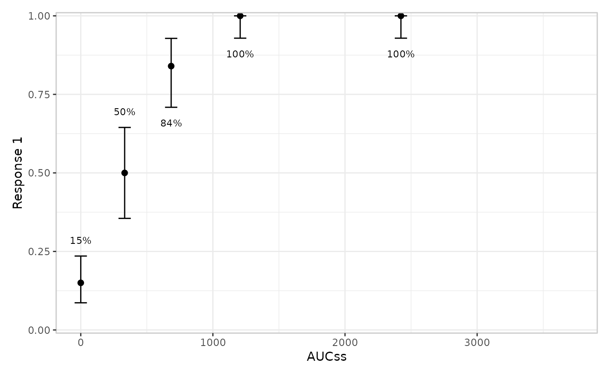
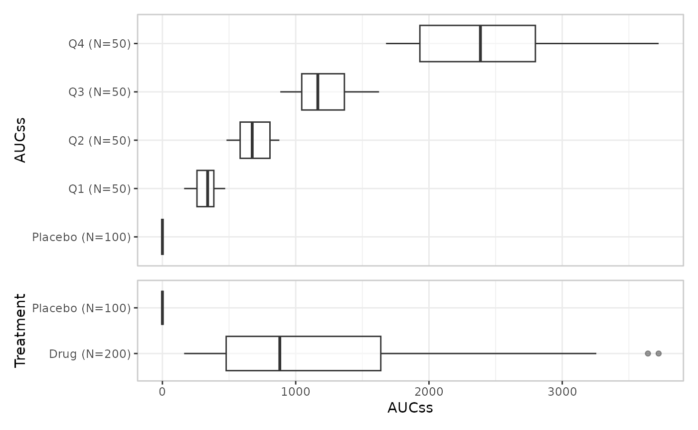

The goal of this article is to describe the grammar that erplots uses to generate exposure-response plots. It’s not intended to describe all the style options available to users, or cover the mechanics of how plots are constructed. If you want to see those in more detail, there are articles covering binary, continuous, and count response data. You can also read the article on extending erplots if you want to learn how you can write your own functions that change how the plots are displayed.
Plots are constructed in layers
The design of an exposure-response plot follows a very similar logic
to how plots are built in the ggplot2 package. The first function you
call is always er_plot(), which creates an empty object of
class er_plot. When you do this, it stores the data set
internally and keeps track of which columns correspond to the exposure,
response, and stratification variables. You then pipe it through through
one or more layer functions, each of which adds one visual
layer, and then finish by calling plot() to generate the
plot. A typical plot generation pipeline might look like this:
mod <- erglm_model(ae1 ~ aucss, erglm_data, family = binomial())
erglm_data |>
er_plot(aucss, ae1) |>
er_plot_add_model(mod) |>
er_plot_add_quantiles() |>
er_plot_add_groups(aucss) |>
plot()
There are a few features to notice here.
- First, the model object
modis not created by the erplots package itself. In this case, we fit the model usingerglm::erglm_model(), and because the erglm package implements the erplots model interface functions, the erplots package knows how to extract everything it needs from the model. - Second, notice that at the end of the pipeline we call
plot()explicitly.One difference between ggplot2 and erplots is that erplots makes a strong distinction between callingprint()on the plot object (outputs a written description of the plot) and callingplot()on the plot object (renders the plot). - Third, although erplots uses the “layers” language to talk about different parts of the plot, an erplot layer operates at a different level of abstraction to a ggplot2 geom. A single erplot layer might add several ggplot2 geoms rather than a single one; it might even create a separate ggplot2 object that gets merged with other ggplot2 objects using the patchwork package.
The diagram below illustrates the structure of the erplots plotting pipeline:
observed data
|
v
er_plot() -- creates the (empty) object
|
v
layer functions (piped, any order, any subset):
er_plot_add_model()
er_plot_add_summary()
er_plot_add_quantiles()
er_plot_add_data()
er_plot_add_groups()
|
v
er_plot_build() -- called for you by plot()
|
v
polish: margins, labels, legends, theme
|
v
compose: patchwork
|
v
rendered plotFrom the user perspective, everything ends with the
er_plot_build() function, which you don’t generally call
directly: passing your plot to the plot() function will do
that part for you. The additional “polish” and “compose” steps are
handled behind the scenes, but shown in the diagram to give you a sense
of what happens.
There are currently five different kinds of layer supported by erplots, each documented on its own help topic:
| Layer | Function | Shows |
|---|---|---|
| Model | er_plot_add_model() |
Fitted curve/ribbon (or spaghetti plot) that shows what the model predicts |
| Summary | er_plot_add_summary() |
A corner-placed annotation describing some aspect to the model (e.g., p-value) or the data set (e.g., sample statistics) |
| Quantile | er_plot_add_quantiles() |
Exposure-quantile-binned response summary, usually a mean and confidence interval |
| Data | er_plot_add_data() |
Raw observations, by default overlaid on the model panel at their true (exposure, response) coordinates, but sometimes added to separate “data strips” that appear above and below the model panel |
| Group | er_plot_add_groups() |
Exposure distribution, boxplot/violin, split by a grouping variable |
Layers are singleton or additive
Calling a layer function twice on the same object doesn’t always do the same thing. The model, summary, quantile, and data layers are singleton: a second call replaces the first call’s result rather than combining the two.
erglm_data |>
er_plot(aucss, ae1) |>
er_plot_add_quantiles(bins = 8) |>
er_plot_add_quantiles(bins = 4) |> # overwrites the bins = 8 call
plot() # rendered plot has 4 quantile bins (plus placebo group)
The group layer is the one exception: it’s additive. Each call adds another panel alongside any already added, rather than replacing them:
erglm_data |>
er_plot(aucss, ae1) |>
er_plot_add_groups(aucss) |> # adds first panel
er_plot_add_groups(treatment) |> # adds second panel
plot() # rendered plot contains both
This is a deliberate design choice, not an oversight: there is only one “the model” and one “the quantiles” to show per plot, but many legitimate ways to slice the exposure distribution by different grouping variables.
Note that there is one important side-effect to this: because the model layer is singleton, overlaying two model curves for comparison (e.g. a candidate model against a reference model) isn’t currently possible. That’s a plausible future addition, but not something currently planned.
Stratification composes with layers
stratify_by, set once in er_plot(),
declares a single discrete variable used to split layers by color/fill,
with one shared, deduplicated legend across the whole composed plot:
mod_strat <- erglm_model(ae1 ~ aucss + sex, erglm_data, family = binomial())
erglm_data |>
er_plot(aucss, ae1, stratify_by = sex) |>
er_plot_add_model(mod_strat) |>
er_plot_add_quantiles() |>
er_plot_add_data() |>
plot()
Each layer’s own keep_strata argument controls whether
that layer uses the stratification (default TRUE
whenever stratify_by was set). The general rule, in the
order a layer actually applies it: a layer’s own encoding takes
precedence; stratification adapts to whatever channel is left,
defaulting to color/fill.
For most layers, color/fill is always free for strata, so this rule
is invisible in practice. The data layer is the one exception, and its
behaviour now depends on which builder is in play, and which
structural family (declared via er_style_tag())
that builder belongs to:
-
er_style_data_overlay()(the default,"overlay"-layout): color, when mapped at all, always means strata – the response is already shown via y-position, so color/fill is free for stratification like every other layer, and the overlay shares the base plot’s own strata legend with the model/quantile layers. -
er_style_data_boxjitter()(the older, panel-based design,"panel"-layout, binary-response only): behaves the same way as overlay – color/fill means strata, shared legend. There is no built-in"panel"-layout builder for a continuous/count response today; if one is written, its color aesthetic would typically already be spoken for by the response value itself, in which case stratification should fall back to one panel per stratum level instead of a shared legend – the concrete instance of “a layer’s own encoding takes precedence” that motivated the general rule. See [er_plot_add_data()] for the full breakdown.
A config$color_role tag ("strata" or
"response", set by .layer_data()) records
which meaning applies for a given data-layer build, so the composition
machinery (.polish_labels()/
.polish_legends()) knows whether to treat a builder’s
legend as the shared strata legend or a standalone response
colorbar.
Response type changes what a layer summarises
response_type, also set once in er_plot()
("auto", "binary", "continuous",
or "count"), governs the response’s scale and which
summary/CI method a response-type-aware layer uses. The model and group
layers don’t look at the response’s type at all – they only consume
er_predict()/er_simulate() output or the
exposure variable, respectively. The quantile layer dispatches on it
directly:
response_type |
Bin summary | CI method |
|---|---|---|
"binary" |
Response rate | Clopper-Pearson (ci_clopper_pearson()) |
"continuous" |
Mean | t-interval (ci_t()) |
"count" |
Mean | Exact Poisson interval (ci_poisson()) |
"auto" classifies a response as "binary" if
it’s logical or confined to {0, 1}, and
"continuous" otherwise – so a genuine count response
auto-detects as "continuous" and is summarised as an
approximately-continuous quantity unless
response_type = "count" is declared explicitly. See
er_plot_add_quantiles() for the full rationale and the count responses article’s “Quantile layer”
section for a worked example, including a case where the choice between
the t-interval and exact Poisson interval visibly matters.
The data layer doesn’t compute a summary statistic at all – it just
plots raw observations – so response_type instead changes
how it’s drawn: er_style_data_overlay() (the
default) needs no dispatch (a plain scatter, or a small vertical jitter
for a binary response’s exactly-0/1 y-values);
er_style_data_boxjitter() is binary-response only, and uses
response_type only insofar as
er_plot_add_data() guards against using it on a
continuous/count response at all (there’s no upper/lower partition to
split on) – see er_plot_add_data().
Theming is a separate concern
Everything above is about the grammar: which layers
exist, whether a second call to a layer function replaces or adds to the
first, and how stratification/response_type change what a
layer draws. None of it touches how the composed plot looks –
labels, axis limits, the overall ggplot2 theme, the discrete color/fill
palette, formatters, and so on. That’s a deliberately separate,
orthogonal knob, er_plot_theme(), covered in its own
article: Theming erplots.
Extending erplots
Writing a custom builder in detail – including what
config actually contains for each layer, a worked crossbar
example, and er_style_tag(), the single helper a builder
can use to declare its
layout/fill_role/y_role metadata
for the composition machinery – is its own article: Extending erplots.